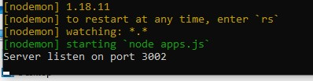

S-Loader is a web apps build with expressjs and MYSQL database. This apps have some simple feature but very useful for your Database or Datawarehouse concerns. In accordance of the title, this app can upload your existing excel file with format .xlsx or .xls into database MYSQL. It can use upload multiple files, but developer limit 5 files for server optimized reason. It has some of feature too.
Feature :
1. Import excel file to Mysql DB
2. Upload multiple excel file into DB
3. Check duplicate data
4. Grouping data
5. Chart data monitor
6. Paging
Make sure you already install nodejs and mysql on your computer or your server. If you not install yet, please install it first. https://nodejs.org/en/download/ . Please choose depend on your environment. For the additional please install npm https://www.npmjs.com/get-npm. Then install MYSQL https://dev.mysql.com/downloads/windows/installer/8.0.html. Once you install it, just follow below step.
1. Create database datauploaddb. Then import datauploaddb.sql.
2. Adjust the mysql setting on file sqlcon.js on config directory. Put your host, user, and password mysql.
To running the application follow below step.
1. Open command prompt. Then find the folder where your extract the application. Then type command "node apps.js". The app will listen on port 3002. Make sure port 3002 is free. The result will looks like below

* If you cannot see the return text. You probably have problem with your nodejs installation or you need to update your npm with command "npm update".
It will update the npm module.
Modules that we have used
1. Mysql
2. body-parser
3. express-session
4. express-flash
5. cookie-parser
6. dateformat
7. csurf
8. jsonwebtoken
9. ejs
10. strtotime
11. create-html
12. adm-zip
13. cookie-parser
14. excel-export
15. md5
16. uniqid
17. multer
18. xls-to-json-lc
19. xlsx-to-json-lc
20. chart.js